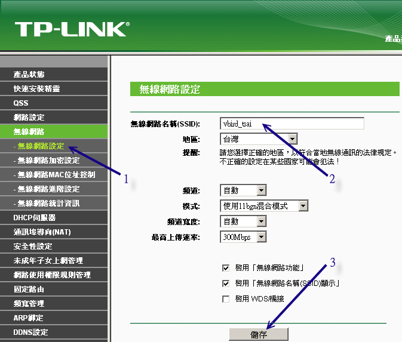

4.3 无线网络--以笔记本电脑为例
除了使用实体 RJ-45 线路来连接网络之外，由于现在笔记本电脑渐渐广为使用，因此在笔记本电脑上面的无线网络 (Wireless Local Area Network, WLAN) 也越来越重要啰～针对无线网络所提出的标准中，早期是 IEEE 802.11b / 802.11g 较为重要，其中 802.11g 这个标准的传输速度已经可以达到 54Mbps 的水平。不过，近期以来还有新的标准，那就是 802.11n (注3) ，这个标准的理论传输速度甚至可达 300Mbps 哩！所以啰，我们也得稍微介绍一下无线网络啦！
Tips: 无线网络的机制非常多，我们现在常听到的主要有 Wi-Fi (可想成是 802.11 相关标准) 以及 WiMAX (802.16, 注4) 等， 在底下我们主要介绍的是目前使用较广泛的 Wi-Fi 相关无线网卡喔！可不要搞错啰！

4.3.1 无线网络所需要的硬件： AP、无线网卡
我们知道在 RJ-45 的以太网络联机环境中，以 switch/hub 以及网络卡与网络线最重要，该架构中主要以 switch/hub 串接所有的网络设备。那么在无线网络中，当然也需要一个接收讯号的装置，那就是无线基地台 (Wireless Access Point, 简称 AP) 了！另一个装置当然就是安装在计算机主机上面的无线网卡啰！
其实无线基地台本身就是个 IP 分享器了，他本身会有两个接口，一个可以与外部的 IP 做沟通，另外一个则是作为 LAN 内部其他主机的 GATEWAY 啰！那其他主机上面只要安装了无线网卡，并且顺利的连上 AP 后，自然就可以透过 AP 来连上 Internet 啦！整个传输的情况可以用下图来示意：
 图 4.3-1、无线网络的联机图标
图 4.3-1、无线网络的联机图标
在上图中，我们假设 PC A 与 PC B 这两部主机都有安装无线网卡，因此他们可以扫瞄到局域网络内的 AP 存在，所以可以透过这个 AP 来连上 Internet 啊。在不考虑内部 LAN 联机的情况下，AP 如何连上 Internet 呢？虽然每部 AP 的控制接口都不相同，不过绝大部分的 AP 都是提供 Web 接口来设定的，因此你可以参考每部 AP 的说明书来进行设定，在这里鸟哥就不多说了。
鸟哥就以手边有的设备来说明这个项目，使用的设备如下：
- AP ： TP-Link (TL-WR941ND)
- USB 的无线网卡： D-Link (DWA-140)，使用 RT3070sta 驱动程序
比较凄惨的是，CentOS 6.x 预设不支持 DWA-140 这个 USB 的无线网卡，因此原本我们还得要自行手动下载 USB 无线网卡的驱动程序才行！更怪的是，我们的核心侦测到的模块是 rt2870sta，但实际上该硬件使用的是 rt3070sta模块... 为了这个，搞了鸟哥两、三天的时间去解决问题...还好，由世界上热心的网友回报支持 Linux 的无线网卡网站说明，发现这只 USB 是支援 Linux 的喔！如下网址所示。而且，已经有公司将这个网卡编译成 CentOS 6.x 可以使用的 RPM 档案啰！相关网址如下：
- 网友们热心提供：http://linux-wless.passys.nl/query_part.php?brandname=D-Link
- 帮我们打包成 RPM 的公司：http://rpm.pbone.net/index.php3
- Ralink 官网的下载处：http://www.ralinktech.com/support.php?s=2
鸟哥最终由上面第二个网址下载的两个档案是：kmod-rt3070sta-2.5.0.1-2.el6.elrepo.x86_64.rpm, rt2870-firmware-22-1.el6.elrepo.noarch.rpm。鸟哥将他放置于 /root 底下，等一下再来安装。
Tips: 这张 USB 无线网卡让鸟哥搞到一个头两个大！基本上，Linux 核心预设不支持的设备，建议不要购买啦！ 否则很难处理！鸟哥觉得这个 DWA-140 感觉就是张恶魔卡～好怪～好难搞...
4.3.2 关于 AP 的设定：网络安全方面
如果你留心一下图 4.3-1 ，那么就可以发现一件事情，那就是：『如果 AP 不设定任何联机限制，那任何拥有无线网卡的主机都可以透过这个 AP 连接上你的 LAN 』， 要知道，通常我们都会认为 LAN 是信任网域，所以内部是没有防火墙的，亦即是不设防的状态，呵呵！ 如果刚好有人拿着笔记本电脑经过你的 AP 可以接收讯号的范围，那么他就可以轻易的透过你的 AP 连接上你的 LAN ，并且可以透过你的 AP 连上 Internet ，如果他刚好是个喜欢搞破坏的 cracker ， 哈哈！那么当他使用你的 AP 去攻击别人时，最后被发现的跳板是谁？当然是你的 AP！ 那是谁会吃上官司？够清楚了吧？而且你内部主机的数据也很有可能被窃取啊！
所以啦，『无线网络的安全性一定是具有很大的漏洞的』，没办法， 因为无线网络的传输并不是透过实体的网络线，而是透过无线讯号，实体网络线很好控制，无线讯号你如何侦测啊？对吧！ 因此，请你务必在你的 AP 上面进行好联机的限制设定，一般可以这样做限制的：
在 AP 上面使用网卡卡号 (MAC) 来作为是否可以存取 AP 的限制：
如此一来，就只有你允许的网络卡才能够存取你的 AP ，当然会安全不少。不过这个方法有个问题， 那就是当有其他主机想要透过这个 AP 联机时，你就得要手动的登入 AP 去进行 MAC 的设定， 在经常有变动性装置的环境中 (例如公司行号或学校)，这个方法比较麻烦～
设定你的 AP 联机加密机制与密钥：
另一个比较可行的办法就是设定联机时所需要的验证密钥！这个密钥不但可以在网络联机的数据当中加密，使得即使你的数据被窃听， 对方也是仅能得到一堆乱码，同时由于 client 端也需要知道密钥并且在联机阶段输入密钥， 因此也可以被用来限制可联机的用户啊！
当然，上面两种方法你可以同时设定，亦即不但需要联机的密钥，而且在 AP 处也设定能够存取的 MAC 网卡， 嘿嘿！这样一来，就更安全的多了(注5)。底下让我们来介绍一下 AP 里面经常要了解的数据， 那就是 ESSID/SSID 啰！
- 关于 ESSID/SSID ：
想一想，如果你有两部 AP 在同一个局域网络内，那么请问一下，当你的无线网卡在上网时，他会透过哪一个 AP 联机出去呢？很困扰，对吧！其实每部 AP 都会有一个联机的名字，那就是 SSID 或 ESSID，这个 SSID 可以提供给 client 端， 当 client 端需要进行无线联机时，他必须要说明他要利用哪一部 AP ，那个 ESSID 就是那时需要输入的数据了！在鸟哥的案例当中，我将我的 AP 设定为 vbird_tsai 这个名字， 并且给予一个密钥密码，设定的方法如同下图所示：
 图 4.3-2、无线网络 AP 的 SSID 设定项目
如上图，在登入了 AP 的设定项目后，依序 (1)先选择无线网络里面的『无线网络设定』，然后在右边的窗口当中 (2)填写正确的 SSID 号码，然后按下 (3)储存即可。之后就是密码项目啦！密码项目的设定画面如下：
 图 4.3-3、无线网络 AP 的密钥设定项目
图 4.3-3、无线网络 AP 的密钥设定项目
我们先选择 (1)无线网络加密设定，然后在右边窗口 (2)点选 WPA-PSK/WPA2-PSK 的加密方式，然后 (3)输入加密的密钥长度，鸟哥这里填写的算是简单到爆炸的密码，小朋友不要学喔！填完后按下储存即可。 这个时候我们就会有底下两个数据：
- SSID： vbird_tsai
- 密钥密码： 123456789aaa
这仅是个范例说明！ AP 设定就到此为止，如果您的设定有不同的地方，请自行查询您 AP 的操作手册呦！
4.3.3 利用无线网卡开始联机
无线网卡有很多模式，鸟哥选择的是 USB 无线网卡，所以想要知道有没有捉到这张网卡，就得要使用 lsusb 来检查， 如果核心预设不支持，还得要自行编译驱动程序才行！如前所述，我们的驱动程序已经捉在 /root 底下了！
检查无线网卡的硬件装置：
使用 USB 无线网卡的检查方式如下：
[root@www ~]# lsusb Bus 002 Device 001: ID 1d6b:0001 Linux Foundation 1.1 root hub Bus 001 Device 003: ID 07d1:3c0a D-Link System DWA-140 RangeBooster N Adapter(rev.B2) [Ralink RT2870] Bus 001 Device 001: ID 1d6b:0002 Linux Foundation 2.0 root hub # 是有捉到的！只是，有加载吗？不知道呢！继续往下检查看看！察看模块与相对应的网卡代号：(modinfo 与 iwconfig)
知道核心侦测到这张网卡，但是能不能正确的加载模块呢？来瞧瞧：
[root@www ~]# iwconfig lo no wireless extensions. eth0 no wireless extensions. # 要出现名为 wlan0 之类的网卡才是有捉到喔！所以没有加载正确模块啦！因为没有加载正确的驱动程序，现在让我们来安装刚刚下载的 RPM 驱动程序吧！请先将 USB 拔出来， 然后再安装 RPM 档案。安装的方法不要说你忘记了！
[root@www ~]# rpm -ivh kmod-rt3070sta* rt2870-firmware* # 这个动作会进行很久，似乎程序在侦测硬件的样子！ # 这个咚咚做完之后，请将 USB 网卡插入 USB 插槽吧！ [root@www ~]# iwconfig lo no wireless extensions. eth0 no wireless extensions. ra0 Ralink STA这个 iwconfig 是用在作为无线网络设定之用的一个指令，与 ifconfig 类似！不过，当我们使用 iwconfig 时，如果有发现上述的特殊字体，那就代表该网络接口使用的是无线网卡的意思啊！虽然有时你会看到无线网卡为 wlan0 之类的代号，不过这张网卡却使用 ra0 作为代号，挺有趣的！
利用 iwlist 侦测 AP ：
好了，接下来要干嘛？当然是看看我们的无线网卡是否能够找到 AP 啊！所以，首先我们要启动无线网卡，就利用 ifconfig 即可：
[root@www ~]# ifconfig ra0 up启动网卡后才能以这个网卡来搜寻整个区域内的无线基地台啊！接下来，直接使用 iwlist 来使用这个无线网卡搜寻看看吧！
[root@www ~]# iwlist ra0 scan ra0 Scan completed : Cell 01 - Address: 74:EA:3A:C9:EE:1A Protocol:802.11b/g/n ESSID:"vbird_tsai" Mode:Managed Frequency:2.437 GHz (Channel 6) Quality=100/100 Signal level=-45 dBm Noise level=-92 dBm Encryption key:on Bit Rates:54 Mb/s IE: WPA Version 1 Group Cipher : CCMP Pairwise Ciphers (1) : CCMP Authentication Suites (1) : PSK IE: IEEE 802.11i/WPA2 Version 1 Group Cipher : CCMP Pairwise Ciphers (1) : CCMP Authentication Suites (1) : PSK ....(底下省略)....从上面可以看到 (1)这个无线 AP 的协议，并且也能够知道 (2)ESSID 的名号是没错的！当然啦，(3)连加密的机制是 WPA2-PSK 也是能够得知的！这与前一小节的 AP 设定是相符合的！(4)使用的无线频道是 6 号，接下来呢？就得要去修改配置文件，这部份很麻烦，请参考如下的网页来设定：
[root@www ~]# ifconfig ra0 down && rmmod rt3070sta [root@www ~]# vim /etc/Wireless/RT2870STA/RT2870STA.dat Default CountryRegion=5 CountryRegionABand=7 CountryCode=TW <==台湾的国码代号！ ChannelGeography=1 SSID=vbird_tsai <==你的 AP 的 ESSID 喔！ NetworkType=Infra WirelessMode=9 <==与无线 AP 支持的协议有关！参考上述网址说明 Channel=6 <==与 CountryRegion 及侦测到的频道有关的设定！ ....(中间省略).... AuthMode=WPAPSK <==我们的 AP 提供的认证模式 EncrypType=AES <==传送认证码的加密机制啊！ WPAPSK="123456780aaa" <==密钥密码！最好用双引号括起来较佳！ ....(底下省略).... # 鸟哥实际有修改的，就是上面有特别说明的地方，其余的地方都保留默认值即可。 # 更奇怪的是，每次 ifconfig ra0 down 后，这个档案会莫名其妙的修改掉 @_@ [root@www ~]# modprobe rt3070sta && ifconfig ra0 up [root@www ~]# iwconfig ra0 ra0 Ralink STA ESSID:"vbird_tsai" Nickname:"RT2870STA" Mode:Auto Frequency=2.437 GHz Access Point: 74:EA:3A:C9:EE:1A Bit Rate=1 Mb/s RTS thr:off Fragment thr:off Encryption key:off Link Quality=100/100 Signal level:-37 dBm Noise level:-37 dBm Rx invalid nwid:0 Rx invalid crypt:0 Rx invalid frag:0 Tx excessive retries:0 Invalid misc:0 Missed beacon:0如果顺利出现上面的数据，那就表示你的无线网卡已经与 AP 接上线了～再来则是设定网络卡的配置文件啰！^_^
设定网络卡配置文件 (ifcfg-ethn)
因为我们的网络卡使用的代号是 ra0，所以也是需要在 /etc/sysconfig/network-scripts 设定好相对应的档案才行啊！而由于我们的这块卡其实是无线网卡， 所以很多设定值都与原本的以太网络卡不同，详细的各项变量设定你可以自行参考一下底下的档案：
- /etc/sysconfig/network-scripts/ifup-wireless 至于我的网络卡设定是这样的：
[root@www ~]# cd /etc/sysconfig/network-scripts [root@www network-scripts]# vim ifcfg-ra0 DEVICE=ra0 BOOTPROTO=dhcp ONBOOT=no <== 若需要每次都自动启动，改成 yes 即可！ ESSID=vbird_tsai RATE=54M <== 可以严格指定传输的速率，要与上面 iwconfig 相同，单位 b/s要注意的是那个 ONBOOT=no 的设定，如果你想要每次开机时无线，网卡都会自动启动， 那就将他设定为 yes 吧！否则就设定为 no 啰！要启动再以 ifup ra0 来启动即可！ 呼呼！到此为止，你的无线网卡已经可以顺利的给他启动了喔！很快乐吧！ ^_^
Tips: 其实上面那个配置文件的内容都是在规划出 iwconfig 的参数而已，所以你除了可以查阅 ifup-wireless 的内容外，可以 man iwconfig ，会知道的更详细喔！而最重要的参数当然就是 ESSID 及 KEY 啰！ ^_^
启动与观察无线网卡
要启动就用 ifup wlan0 来启动，很简单啦！要观察就用 iwconfig 及 ifconfig 分别观察，底下你自己瞧瞧就好啊！ ^_^
[root@www ~]# ifup ra0 Determining IP information for ra0... done.
整个流程就是这么简单喔！一般来说，目前比较常见的笔记本电脑内建的 Intel 无线网络模块 (Centrino) 适用于 Linux 的 ipw2200/ipw21000 模块，所以设定上也是很快！因为 CentOS 6.x 预设就有支持，你不必重新安装无线网卡驱动程序！ 那直接透过上述的方式来处理你的无线网络即可！很快速又方便吧！本章结尾的参考数据处， 鸟哥还是列出许多与无线网卡有关的连结，你可以自行前往查阅与你的无线网卡有关的信息喔(注6)！ ^_^